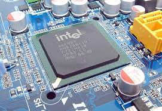
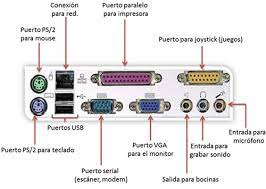

3.1 Chipset
Un chipset es el conjunto de circuitos integrados diseñados con base en la arquitectura de un procesador (en algunos casos, diseñados como parte integral de esa arquitectura), permitiendo que ese tipo de procesadores funcionen en una placa base. Sirven de puente de comunicación con el resto de componentes de la placa, como son la memoria, las tarjetas de expansión, los puertos USB, ratón, teclado, etc.

Las placas base modernas suelen incluir dos integrados, denominados puente norte y puente sur, y suelen ser los circuitos integrados más grandes después de la GPU y el microprocesador. Las últimas placa base carecen de puente norte, ya que los procesadores de última generación lo llevan integrado.
3.1.1 Unidad de procesaiento.
La unidad central de procesamiento (conocida por las siglas CPU, del inglés: Central Processing Unit), es el hardware dentro de un ordenador u otros dispositivos programables, su trabajo es interpretar las instrucciones de un programa informático mediante la r ealización de las operaciones básicas aritméticas, lógicas y externas (provenientes de la unidad de entrada/salida). Su diseño y avance ha variado notablemente desde su creación, el cual era algo demasiado grande y que se calentaba mucho, a la actualidad, que es pequeño, y sí se calienta pero no demasiado como en la antigüedad.
Un ordenador puede contener más de una CPU (multiprocesamiento). En la actualidad, los microprocesadores están constituidos por un único circuito integrado (chip) aunque existen los procesadores multinúcleo (varias CPU en un solo circuito integrado). Un circuito integrado que contiene una CPU también puede contener los dispositivos periféricos, y otros componentes de un sistema informático; similar a un microcontrolador (menos potente en RAM) se le denomina sistema en un chip (SoC).
Los componentes de la CPU son: Unidad aritmético lógica (ALU): Realiza operaciones aritméticas y lógicas. Unidad de control (CU): Dirige el tráfico de información entre los registros de la CPU y conecta con la ALU las instrucciones extraídas de la memoria. Registros internos: No accesibles (de instrucción, de bus de datos y bus de dirección) y accesibles de uso específico (contador programa, puntero pila, acumulador, flags, etc.) o de uso general.
3.1.2 Controlador del Bus
El controlador del bus se encarga de la frecuencia de funcionamiento y las señales de sincronismo , temporización y control. Está ubicado en un chip en la placa base.
El bus es la vía a través de la que se van a transmitir y recibir todas las comunicaciones, tanto internas como externas, del sistema informático. El bus es solamente un dispositivo de transferencia de información entre los componentes conectados a él, no almacena información alguna en ningún momento. Los datos, en forma de señal eléctrica, sólo permanecen en el bus el tiempo que necesitan en recorrer la distancia entre los dos componentes implicados en la transferencia.
3.1.3 Puertas de Entrada Salida E/S
Un puerto de E/S es un enchufe en una computadora al que se conecta un cable. El puerto conecta la CPU a un dispositivo periférico a través de una interfaz de hardware o a la red a través de una interfaz de red.
Puerto interno: Conecta la placa base a dispositivos internos como unidad de disco duro, unidad de CD, módem interno, etc. Puerto externo: Conecta la placa base a dispositivos externos como módem, mouse, impresora, unidades flash, etc.
Tipos de puertos:
Puerto serial: Los puertos seriales transmiten datos secuencialmente un bit a la vez. Por lo tanto, solo necesitan un cable para transmitir 8 bits. Sin embargo, también los hace más lentos. Los puertos serie suelen ser conectores macho de 9 o 25 pines. También se conocen como puertos COM (comunicación) o puertos RS323C.

Puerto PS/2: PS/2 son las siglas de Personal System/2. Es un puerto estándar hembra de 6 pines que se conecta al cable mini-DIN macho. IBM introdujo PS/2 para conectar el mouse y el teclado a las computadoras personales. Este puerto ahora está casi obsoleto, aunque algunos sistemas compatibles con IBM pueden tener este puerto.
Puerto de infrarrojos: El puerto de infrarrojos es un puerto que permite el intercambio inalámbrico de datos en un radio de 10 m. Dos dispositivos que tienen puertos infrarrojos se colocan uno frente al otro para que los haces de luces infrarrojas se puedan utilizar para compartir datos.
Puerto USB: USB son las siglas de Universal Serial Bus. Es el estándar de la industria para la conexión de datos digitales de corta distancia. El puerto USB es un puerto estandarizado para conectar una variedad de dispositivos como impresora, cámara, teclado, altavoz, etc.
Puerto Bluetooth: Bluetooth es una especificación de telecomunicaciones que facilita la conexión inalámbrica entre teléfonos, computadoras y otros dispositivos digitales a través de una conexión inalámbrica de corto alcance. El puerto Bluetooth permite la sincronización entre dispositivos habilitados para Bluetooth.
Puerto FireWire: FireWire es el estándar de interfaz de Apple Computer para permitir la comunicación de alta velocidad mediante bus serie. También se llama IEEE 1394 y se usa principalmente para dispositivos de audio y video como videocámaras digitales.
3.1.4 Controlador de Interruptores
El controlador de interrupciones es un módulo que tiene por función gestionar las interrupciones de entrada/salida para el procesador. Esto ahorra diseñar lógica y añadir patitas al procesador. También proporciona flexibilidad porque permite idealmente, gestionar un número ilimitado señales de interrupción (favoreciendo la expansión del sistema de entrada/salida).
Ciclo de reconocimiento de interrupción Tras la activación de una línea IR, el controlador activa la salida INTR señalándole a la CPU la existencia de una interrupción activada. Al recibir la señal, el procesador da un pulso en su salida INTA indicando que comienza un ciclo de reconocimiento de interrupción. Al recibir el controlador el pulso por su entrada INTA comienza a arbitrar las interrupciones recibidas y selecciona la más prioritaria. Se emite un segundo pulso por la línea INTA del procesador (o controlador de bus) que utiliza el controlador para depositar en el bus el vector correspondiente a la interrupción de mayor prioridad. El procesador obtiene la dirección de la rutina de interrupción a partir de este dato y salta a ella. Almacena el registro de flags y la dirección de retorno, deshabilita las interrupciones y comienza a ejecutar la rutina.
3.1.5 Controlador de Acceso Directo a Memoria (DMA)
El mecanismo de acceso directo a memoria está controlado por un chip específico, el DMAC ("DMA Controller"), que permite realizar estos intercambios sin apenas intervención del procesador. En los XT estaba integrado en un chip 8237A que proporcionaba 4 canales de 8 bits (puede mover solo 1 Byte cada vez); sus direcciones de puerto son 000–00Fh. Posteriormente en los AT se instalaron dos de estos integrados y las correspondientes líneas auxiliares en el bus de control.

3.1.6 Circuitos de Temporización
El circuito electrónico que más se utiliza tanto en la industria como en circuitería comercial, es el circuito temporizador o de retardo, dentro de la categoría de temporizadores, cabe destacar el más económico y también menos preciso consistente en una resistencia y un condensador, a partir de aquí se puede contar con un sinfín de opciones.
Se encuentra en la placa base de la PC y que es capaz de mantener una cuenta de tiempo basada en el reloj de la computadora. Puede usarse para calcular el intervalo entre dos mediciones de tiempo o para generar pausas. Este chip tiene la capacidad de realizar diferentes funciones de conteo. Es útil para medir el tiempo que dura cierto proceso o para mantener actualizadas la hora del día y la fecha si se deja la PC conectada y encendida.
3.1.7 Circuitos de Control
Es una red secuencial que acepta un código que define la operación que se va a ejecutar y luego prosigue a través de una secuencia de estados, generando una correspondiente secuencia de señales control.
3.1.8 Controladores de Video
Los controladores son circuitos de entrada que tienen todas las impresoras. Son los que procesan la información en primer lugar para saber exactamente qué les está llegando y como manipular los datos. Por ejemplo, un controlador de una impresora recoge los datos que proceden del PC y los convierte en datos de imagen que deberán pasar a lo que llamamos video interface de la impresora. Este otro dispositivo, se encarga de recuperar los datos que ha dejado el controlador e inyectarlos hasta el sistema de escritura del periférico . Los datos de imagen indican si un punto es blanco o negro, en caso de una impresora de color de que color será ese punto.
3.2 Aplicaciones.
El Chipset es el que hace posible que la placa base funcione como eje del sistema, dando soporte a varios componentes e interconectándolos de forma que se comuniquen entre ellos haciendo uso de diversos buses. Es uno de los pocos elementos que tiene conexión directa con el procesador, gestiona la mayor parte de la información que entra y sale por el bus principal del procesador, del sistema de vídeo y muchas veces de la memoria RAM. En el caso de los computadores PC, es un esquema de arquitectura abierta que establece modularidad: el Chipset debe tener interfaces estándar para los demás dispositivos. Esto permite escoger entre varios dispositivos estándar, por ejemplo en el caso de los buses de expansión, algunas tarjetas madre pueden tener bus PCI-Express y soportar diversos tipos de tarjetas de distintos anchos de bus (1x, 8x, 16x). En el caso de equipos portátiles o de marca, el chipset puede ser diseñado a la medida y aunque no soporte gran variedad de tecnologías, presentará alguna interfaz de dispositivo.
3.2.1 Entrada/Salida
El papel que juegan los dispositivos periféricos de la computadora es esencial; sin tales dispositivos ésta no sería totalmente útil. A través de los dispositivos periféricos podemos introducir a la computadora datos que nos sea útiles para la resolución de algún problema y por consiguiente obtener el resultado de dichas operaciones, es decir; poder comunicarnos con la computadora.
La computadora necesita de entradas para poder generar salidas y éstas se dan a través de dos tipos de dispositivos periféricos existentes: Dispositivos periféricos de entrada: Los periféricos de entrada son aquellos que se utilizan para proporcionar datos y señales a la unidad de procesamiento. Suele hacerse una clasificación de acuerdo a la modalidad de entrada, o bien de acuerdo a si la entrada tiene carácter discreto o continuo. Algunos de ellos son, el teclado, mouse, escáner, cámara web, micrófono y lector de CD/DVD. Dispositivos periféricos de salida: Son capaces de reproducir lo que ocurre en la computadora para el interés del usuario. La CPU genera patrones de bits internos, y son estos dispositivos los encargados de hacerlos comprensibles para el usuario. Algunos de estos son, el monitor, impresora, auriculares, tarjeta de sonido y tarjeta de voz.
3.2.2 Almacenamiento
El almacenamiento de datos tiene un proceso a través del uso de la tecnología, ésta se aplica para organizar, distribuir y archivar información con los bytes y los bits que son parte de los sistemas de los que la gente depende día con día, llega a ser tan importante en todos los servicios: desde una simple aplicación, contenido multimedia, direcciones, contactos, hasta protocolos de red y todo lo que tiene que ver con el mundo digital.
Memoria contra almacenamiento Generalmente, los usuarios de computadoras tienden a confundir los términos “memoria” y “almacenamiento” pues los emplean de manera indistinta, utilizándolos para referirse a la RAM (o memoria principal) o al disco duro. Desde el punto de vista técnico, ambos términos son prácticamente iguales pues tanto la RAM como el disco duro se utilizan para almacenar información, claro está, de formas distintas y para propósitos diferentes.
Almacenamiento en sistemas informáticos Un dispositivo de almacenamiento es un hardware que se utiliza principalmente para almacenar datos. Cada computadora de escritorio, computadora portátil, tablet y smartphone tendrán algún tipo de dispositivo de almacenamiento en su interior y también puedes obtener unidades de almacenamiento externo independientes que se pueden utilizar en varios dispositivos.
3.2.3 Fuentes de Alimentación
Una fuente de alimentación es un componente esencial de cualquier dispositivo electrónico ya que es ella quien se encarga de darle vida. En cualquier equipo, por pequeño que sea, siempre hay una fuente de alimentación, aunque no la veamos.
Una fuente de alimentación sirve para dar energía a un dispositivo electrónico. Siguiendo con el tema de los ordenadores de sobremesa, la fuente de alimentación da energía a la placa base, CPU, tarjetas gráficas, HDDs, SSDs, ventiladores, lectores de CDs. En resumen, alimenta a todo lo que necesite energía, para ello hace uso de diferentes tipos de cables.
3.3 Ambientes de Servicio
El negocio de proveer servicios de datos es mucho más complejo que la forma en la que se dan los tradicionales servicios, los primeros requieren de nuevos conocimientos y modelos de negocio, que con frecuencia se termina involucrando o necesitando la colaboración de terceras empresas. Por lo que se hace necesario que los operadores tradicionales transformen su negocio para ofrecer los servicios de datos con los niveles de servicio que el mercado exige.
3.3.1 Negocios
Definitivamente, la tecnología en general ha sido la causa principal y la acción más directa para la transformación del trabajo de las organizaciones en la posguerra del siglo XX. Tanto los bienes de capital «duros» (computadores, teléfonos, videos, facsímiles, grabadoras, etc.), como los programas y sistemas de información y comunicación en general, han incrementado enormemente la productividad y eficiencia de las organizaciones. Tenemos como ejemplos los siguientes: bases de datos en redes de todo orden y topología, sistemas de reservaciones en aerolíneas, sistemas de contabilidad y nóminas, archivos clínicos en centros de salud, sistemas de conmutación electrónica y un sin número de otras aplicaciones a procesos administrativos.
3.3.2 Industria
La industrialización de los servicios de tecnología de información va a redefinir el mercado en términos de como las organizaciones evalúan, compran y seleccionan los servicios y como los vendedores desarrollan y establecen precios de los servicios.
3.3.3 Comercio Electrónico
El desarrollo de estas tecnologías y de las telecomunicaciones ha hecho que los intercambios de datos crezcan a niveles extraordinarios, simplificándose cada vez más y creando nuevas formas de comercio, y en este marco se desarrolla el Comercio Electrónico.
Se considera “Comercio Electrónico” al conjunto de aquellas transacciones comerciales y financieras realizadas a través del procesamiento y la transmisión de información, incluyendo texto, sonido e imagen.